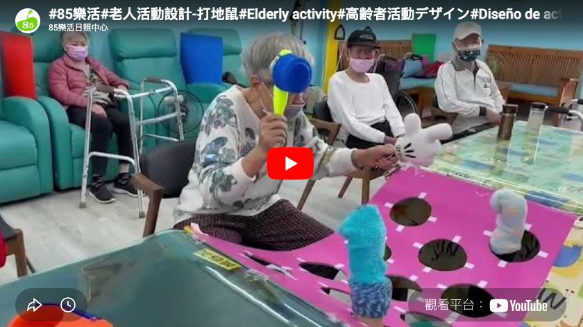

陪你 · 陪伴服務
今日陪伴聯絡簿
爸媽今天過得怎麼樣，我們替你記下來
2025年4月20日（日）下午 2:00 – 5:00
本次陪伴對象
👴
陳伯伯
78 歲・台北市大安區
陪伴員：林小涵 第 6 次陪伴
今日狀態
😄 心情很好
💬 話多愛分享
🍞 午餐吃完了
🚶 有出門走走
今日陪伴影片

點擊於 YouTube 開啟
影片由陪伴員拍攝，僅供家屬觀看。本影片將於 30 天後自動刪除。
今日行程紀錄
14:00
散步到大安公園，坐在樹下聊了聊以前在鐵路局工作的故事，伯伯很開心，說好久沒有人聽他講這些了。
回憶分享
15:00
在附近麵包店喝咖啡，伯伯點了菠蘿麵包——
「這個菠蘿麵包，以前下班回家都會買一個，是女兒最喜歡的點心。」
家庭回憶
16:00
回家後一起做了「打地鼠」手腦協調運動，伯伯很投入，越做越起勁。
手腦運動
17:00
離開前伯伯說「下次早點來」，還拿了兩顆橘子給我帶走。結束陪伴。
陪伴員手寫心得
伯伯今天狀態特別好，我覺得提到鐵路局的時候他眼睛都亮了。他說已經很久沒有人問他年輕時做什麼了。下次我想帶他去騎腳踏車，他說以前很喜歡騎。今天也確認他的藥有準時吃，精神不錯，走路也很穩。
林小涵，陪伴員 寫於 2025.04.20
本次陪伴數據
3h
陪伴時數
本月累計 12h
6
累計次數
服務滿 2 個月
佳
整體狀態
優 / 佳 / 待關注
生活觀察紀錄
用餐狀況
走動活力
情緒表現
用藥確認
已確認
下次陪伴預告
📅
下次陪伴：4 月 27 日（日）下午 2:00
陪伴員林小涵計畫帶伯伯去腳踏車道騎車，請確認伯伯當天的身體狀況，如有調整請提前告知。
分享這份服務
覺得安心嗎？
把陪你介紹給也有同樣需求的家庭
分享給家人
推薦給朋友
儲存紀錄